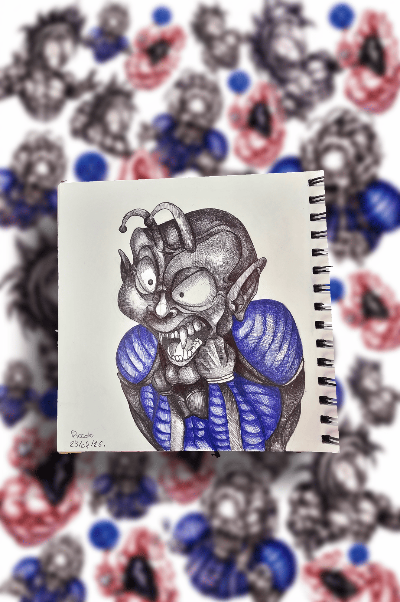
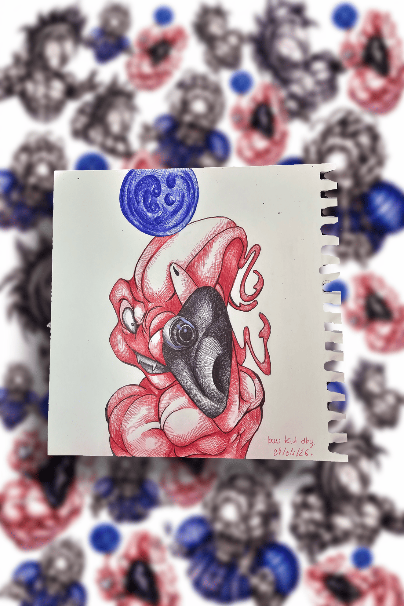
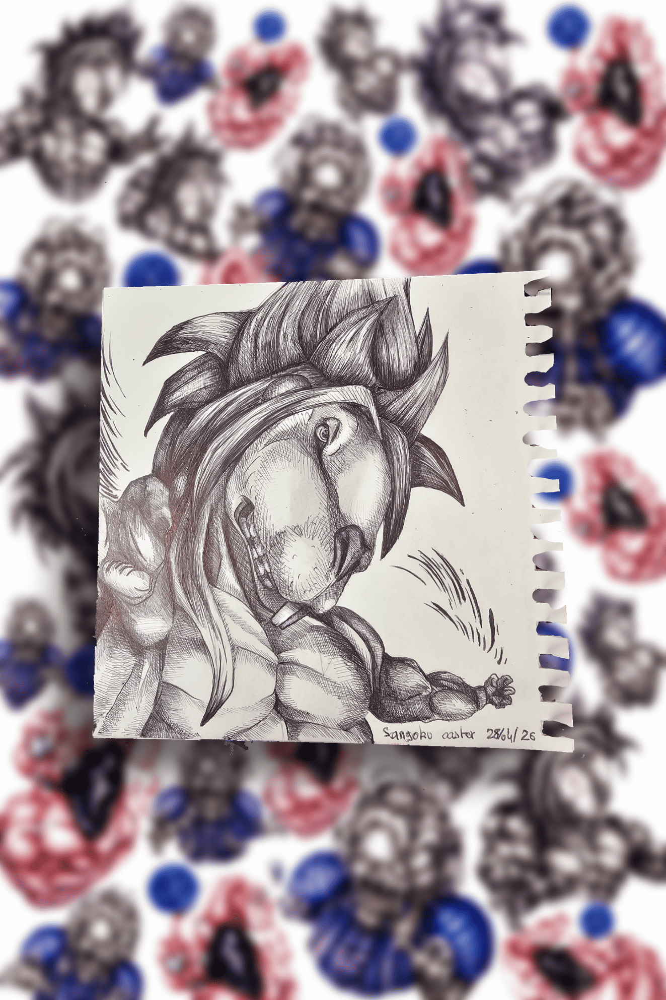

Icône 02

Icône 03
galerie / inspirations
Premières inspirations en préparation.
Cette vitrine accueillera progressivement des héros, personnages cultes, inspirations manga, cinéma, animation et créations influencées par la pop culture.
vitrine 05 / héros & inspirations
Héros, icônes & réinterprétations.
Cette vitrine rassemble les reproductions artistiques, inspirations manga, cinéma, animation, jeux vidéo et personnages iconiques revisités dans l’univers Carickat.
L’objectif n’est pas seulement de reproduire, mais de réinterpréter : retrouver une énergie, une présence, une tension ou une vision différente du personnage.
icône
hommage
esprit de la vitrine
Entre hommage et transformation.
Cette section mélange admiration, observation, reproduction, stylisation et réinterprétation visuelle.
matière inspiration
Icônes · Manga · Pop culture
- Personnages iconiques
- Inspirations manga & cinéma
- Reproductions artistiques
- Réinterprétations personnelles
- Études de héros
- Futures collections pop culture
chemin héros
Réinterpréter les icônes.
Cette vitrine prépare des œuvres inspirées de mangas, films, jeux vidéo et personnages iconiques, revisités dans l’univers Carickat.
futur des collections
Ce qui arrivera progressivement.
reproductions
Dessins de héros
Reproductions artistiques, inspirations visuelles et personnages revisités dans le style Carickat.
bientôt
éditions futures
Prints & affiches
Futures éditions imprimées liées aux personnages, inspirations et œuvres de cette vitrine.
ouverture future
carnet d’inspirations
Études & recherches
Pages de recherches, études de personnages, silhouettes, regards et réinterprétations graphiques.
carnet évolutif
commande spéciale
Demander un héros revisité.
Il sera possible de demander : reproduction artistique, hommage dessiné, personnage revisité, fusion visuelle ou interprétation plus expérimentale.
vitrine évolutive
Cette section évoluera avec les inspirations.
Nouveaux héros, nouvelles influences, nouveaux hommages, nouvelles réinterprétations. Le carnet grandira avec les univers qui l’inspirent.
direction
Manga · Cinéma · Icônes · Carnet vivant
Cette vitrine sert à construire une bibliothèque d’inspirations personnelles et de réinterprétations dans l’univers Carickat.